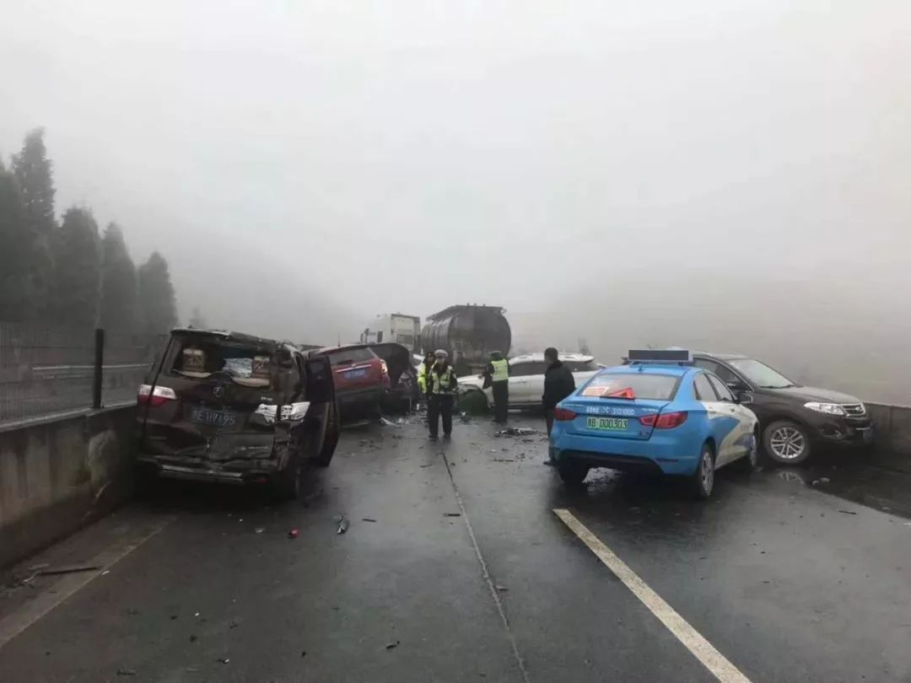
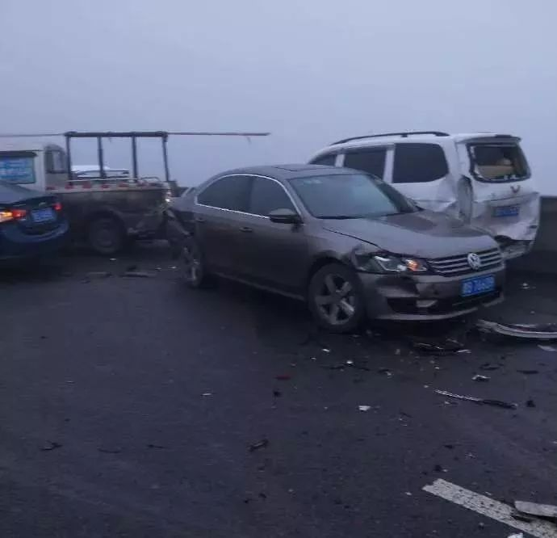
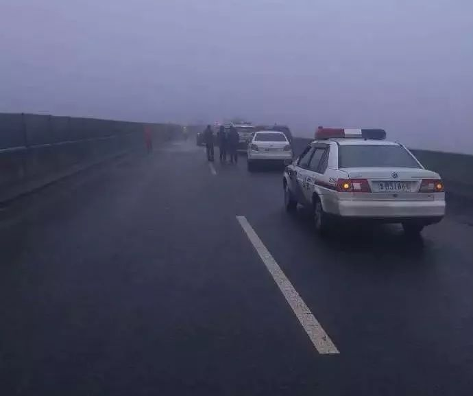
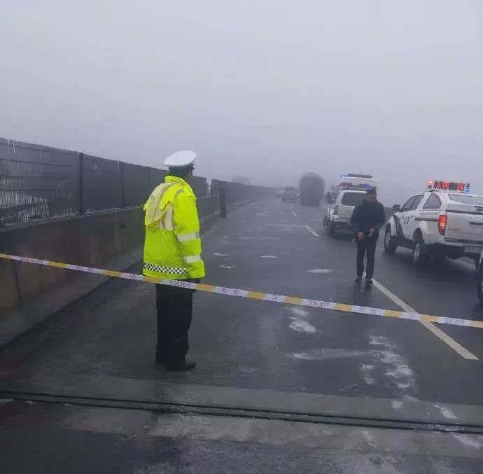

红果高速，37车连撞
富源人富源事儿
1月2日
1月2日8点30分左右，威板高速（水盘段）以倮田大桥上(鸡场坪往红果方向）发生交通事故，据事故现场人员爆料现场共有37辆车相撞， 截止发稿时间事故已造成3人死亡。以下为现场发来视频和照片：   有关各方迅速达到现场并积极救援处置，伤者已送医院治疗。   相关部门已采取紧急处置措施，对事故现场进行临时交通管制。截至记者发稿时，鸡场坪往红果方向已正常通行，红果往鸡场坪方向仍有交通管制， 请司机朋友谨慎驾驶。请各位朋友相互转告，规划路径出行！